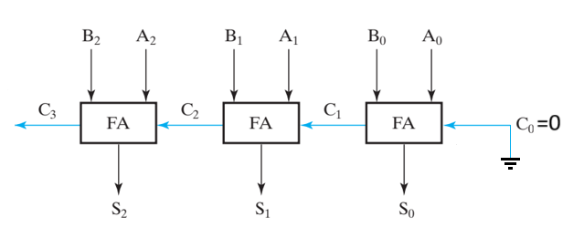

Mạch tư duy tổ hợp (Combinational Logic Circuits) là loại cấu trúc mạch trong đó đầu ra của mạch là một hàm tư duy trực
tiếp của các đầu vào tại cùng thời điểm.
Đặc điểm chính của mạch tư duy tổng hợp:
Được xây dựng từ các mạch tư duy cơ bản như: AND, OR, NOT, NAND, NOR, XOR, XNOR
Đầu ra thay đổi ngay lập tức khi đầu vào thay đổi
Không có bộ nhớ (memoryless)
Combinational Functional Blocks - Mạch Tư Duy Chức Năng
Mạch chức năng thông dụng được tạo nên từ mạch tư duy tổ hợp gồm:
Mạch giải mã (decoder)
Mạch mã hóa (encoder)
Mạch chọn hay mạch điều kênh (multiplexer)
Mạch phân tách hay mạch phân kênh (demultiplexer)
Các mạch tính toán số học như mạch cộng, mạch trừ và mạch cộng trừ đa năng
Mạch Giải Mã - Decoder Circuits
Mạch giải mã (Decoder) là một loại mạch có chức năng chuyển đổi tín hiệu số nhị phân đầu vào (0: 00,
1: 01, 2: 10, 3: 11) thành một
dạng tín hiệu đầu ra riêng biệt (1000, 0100, 0010, 0001). Thông thường, mạch giải mã nhận vào n bit dữ liệu
và kích hoạt đúng một
trong số 2^n đầu ra dựa trên tổ hợp giá trị của các bit đầu vào.
Mạch giải mã thường được sử dụng trong các ứng dụng như:
Lựa chọn đường truyền trong bộ nhớ (memory addressing)
Điều các thiết bị hiển thị (như LED, màn hình)
Một số loại mạch giải mã phổ biến bao gồm:
Mạch giải mã 2-ra-4 (2-to-4 decoder)
Mạch giải mã 3-ra-8 (3-to-8 decoder)
Mạch giải mã 4-ra-16 (4-to-16 decoder)
Thông thường, mạch giải mã có thể có thêm chân Enable để bật hoặc tắt toàn bộ chức năng giải mã theo
yêu cầu.
2-to-4 Line Decoder (No Enable)
2-to-4 Line Decoder (With Enable)
3-to-8 Line Decoder (No Enable)
3-to-8 Line Decoder (With Enable)
Mạch Mã Hóa - Encoder Circuits
Mạch mã hóa (Encoder) là một mạch có chức năng trái ngược với mạch giải mã (Decoder). Nó được dùng để
mã hóa các tính hiệu đầu vào thành tính hiệu số nhị
phân đầu ra.Thông thường, một mạch mã hóa có 2n đầu vào và n đầu ra. Ví dụ, một mạch mã hóa 8-3
sẽ có 8 tín hiệu đầu vào và 3 tín hiệu đầu ra, biểu diễn mã nhị phân của đầu vào đang được kích hoạt.
Tuy nhiên, trong thực tế, có thể xảy ra trường hợp nhiều đầu vào cùng được kích hoạt cùng lúc. Để xử lý vấn
đề này, người ta thiết kế mạch mã hóa ưu tiên (Priority Encoder). Trong mạch mã hóa ưu tiên, nếu có
nhiều
đầu vào đồng thời ở mức "1", mạch sẽ tự động ưu tiên tín hiệu đầu vào có thứ tự cao hơn
Ngoài ra, nhiều mạch mã hóa còn bổ sung một đầu ra đặc biệt gọi là chân Validity (V), hay còn gọi là
chân hợp
lệ. Chân này có nhiệm vụ báo hiệu rằng có ít nhất một đầu vào đang được kích hoạt. Nếu tất cả các đầu vào
đều ở mức "0", chân V sẽ ở mức "0" để báo rằng không có đầu vào hợp lệ; ngược lại, nếu có đầu vào được kích
hoạt, chân V sẽ ở mức "1".
Ứng dụng của mạch mã hóa:
Bàn phím số: Khi một phím được nhấn, mạch mã hóa sẽ chuyển tín hiệu từ phím đó thành mã nhị phân
gửi cho bộ xử lý.
Xử lý tính hiệu cảm biến: Trong các hệ thống cảm biến, mạch mã hóa được sử dụng để đọc vị trí,
tốc độ hoặc các trạng thái khác.
Thiết kế hệ thống giao tiếp số: Giảm số lượng dây dẫn cần thiết khi truyền tải nhiều tín hiệu.
8-to-3 Priority Encoder (with Valid Output)
Mạch chọn kênh - Multiplexer Circuits
Mạch chọn hay mạch điều kênh (Multiplexer - viết tắt là MUX) là một loại mạch có chức năng chọn một trong nhiều
tín hiệu đầu vào để truyền ra một đầu ra duy nhất. Mục tiêu của bộ chọn là gộp nhiều nguồn dữ liệu vào một
đường truyền chung, từ đó giúp tiết kiệm số lượng dây dẫn và tối ưu hóa hệ thống mạch.
Một bộ chọn thông thường có:
2n đầu vào dữ liệu (data inputs),
n đầu vào chọn (select inputs) để xác định đầu vào nào sẽ được kết nối tới đầu ra,
và 1 đầu ra duy nhất (output).
Ví dụ: Một bộ chọn 4-1 có 4 đầu vào dữ liệu (D0, D1, D2, D3), 2 đầu vào chọn (S1, S0), và 1 đầu ra (Y). Các
đầu vào chọn S1, S0 sẽ quyết định tín hiệu từ đầu vào nào sẽ xuất hiện tại đầu ra, D0 hoặc D1 hoặc D2 hoặc
D3.
4-to-1 Multiplexer
4-to-1 Multiplexer Logic Diagram
Mạch Phân Tách - Demultiplexer Circuits
Mạch phân tách hay mạch phân kênh (Demultiplexer - viết tắt là DEMUX) là một loại mạch có chức năng nhận
một tín hiệu đầu vào và phân phối tín hiệu đó tới một trong nhiều đầu ra. Bộ phân kênh thực hiện quá trình
ngược lại so với bộ chọn (Multiplexer).
Một bộ phân kênh thông thường có:
1 đầu vào dữ liệu (Data Input),
n đầu vào chọn (Select Inputs) để quyết định tín hiệu sẽ được gửi đến đầu ra nào,
và 2n đầu ra (Outputs).
Ví dụ: Một bộ phân kênh 1-4 có 1 đầu vào dữ liệu (D), 2 đầu vào chọn (S1, S0), và 4 đầu ra (Y0, Y1, Y2, Y3).
Các tín hiệu tại đầu vào chọn S1 và S0 sẽ xác định đầu ra nào nhận dữ liệu từ đầu vào, D0 hoặc D1 hoặc D2
hoặc
D3.
1-to-4 Demultiplexer
1-to-4 Demultiplexer Logic Diagram
Mạch cộng (Adder)
Mạch cộng (Adder) là một mạch tổ hợp dùng để thực hiện phép cộng hai số nhị phân. Trong điện tử số, mạch cộng
được sử dụng rất phổ biến trong các bộ xử lý, đơn vị tính tư duy số học (Arithmetic Logic Unic).
Bên dưới
mô
phỏng số dương ở hệ nhị phân, bạn có thể nhấn "TĂNG" để thêm 1 giá trị cho nó.
0
Mạch cộng đủ 1-bit (Full Adder) là một mạch cơ bản để cầu tạo một mạch cộng nhiều bit. Mạch này có thể
cộng hai bit với một bit nhớ từ phép tính trước đó. Trong thiết
kế vi xử lý, các mạch cộng nhiều bit được mở rộng từ bộ cộng đủ 1-bit để tạo thành mạch cộng 4-bit, 8-bit,
16-bit hoặc nhiều hơn. Mạch cộng đủ
1-bit có ba đầu vào là A, B và Cin (carry-in), và hai đầu ra là S (sum) và
Cout
(carry-out).
Bảng chân trị của mạch cộng đủ 1-bit:
A
B
Cin
S
Cout
0
0
0
0
0
0
0
1
1
0
0
1
0
1
0
0
1
1
0
1
1
0
0
1
0
1
0
1
0
1
1
1
0
0
1
1
1
1
1
1
Biểu thức logic:
S = A ⊕ B ⊕ Cin
Cout = (A · B) + (Cin · (A ⊕ B))
Ví dụ: Mạch cộng 3-bit (3-Bit Adder)
Để cộng hai số nhị phân 3-bit, ta cần ghép nối ba mạch cộng đủ 1-bit (Full Adder - FA) liên tiếp như sau:
Bit 0: Dùng một mạch cộng đủ để cộng A0 và B0 với Cin = 0. Xuất ra
S0 và Cout0.
Bit 1: Dùng mạch cộng đủ thứ hai để cộng A1 và B1 với Cin =
Cout0. Xuất ra Sin và Cout1.
Bit 2: Dùng mạch cộng đủ thứ ba để cộng A2 và B2 với Cin =
Cout1. Xuất ra S2 và Cout2.
Đầu ra cuối cùng là một số nhị phân 4-bit gồm ba bit tổng (S2, S1, S0) và
bit nhớ cuối (Cout2) nếu có tràn số (overflow).
3-Bit Adder

Mạch Trừ - Subtractor
Mạch trừ (Subtractor) là một mạch được sử dụng để thực hiện phép trừ giữa hai số nhị
phân. Thay vì thiết kế một mạch trừ hoàn toàn riêng biệt, trong thực tế các hệ thống số thường sử dụng
mạch cộng (Adder) kết hợp với phép biểu diễn số âm bằng số bù hai (2's complement) để thực
hiện phép trừ.
Bên dưới
mô
phỏng số âm / dương ở hệ nhị phân, để biểu thị số âm, mượn thêm 1 bit để chứa số ở miền âm và các số ở miền âm được tính theo phương pháp bù hai, bạn có
thể nhấn "TĂNG" để thêm 1 giá trị.
0
Nguyên lý trừ bằng phép bù hai
Thay vì trực tiếp tính A - B, ta sử dụng công thức:
A - B = A + (số bù 2 của B)
Trong hệ nhị phân, số bù hai của một số B được tính như sau:
Đảo tất cả các bit của B (lấy bù một, 1’s complement).
Cộng thêm 1 vào kết quả để có bù hai.
Khi đã có bù hai của B, ta cộng nó với A bằng mạch cộng thông thường (Full Adder). Kết quả nhận được chính là
A - B.
4-Bit Subtractor (A - B)
Mạch trừ có thể có thêm chức năng nhận biết tràn số
Mạch Cộng Trừ Đa Năng - Adder/Subtractor
Mạch cộng trừ đa năng (Adder/Subtractor) là một mạch tổ hợp có khả năng thực hiện cả phép cộng và phép trừ giữa hai
số nhị phân. Thay vì sử dụng hai mạch riêng biệt, mạch cộng/trừ thực hiện hai phép toán một cách linh hoạt, chỉ thông qua một tín hiệu điều khiển. Để làm được việc này, mạch có:
Một tín hiệu điều khiển gọi là Subtract:
Khi Subtract = 0: thực hiện phép cộng (A + B)
Khi Subtract = 1: thực hiện phép trừ (A - B)
Các cổng XOR được sử dụng để chuyển đổi đầu vào B thành dạng bù hai khi thực hiện phép trừ.
Mỗi bit của B sẽ đi qua một cổng XOR với tín hiệu Subtract. Nếu Subtract = 0, B không đổi. Nếu Subtract = 1, B bị đảo (tương
đương với bước lấy bù một), sau đó tín hiệu Subtract cũng được đưa vào Carry-in ban đầu của bộ cộng để hoàn tất
quá trình lấy bù hai.
4-Bit Adder/Subtractor
Mạch cộng trừ đa năng có thể có thêm chức năng nhận biết tràn số